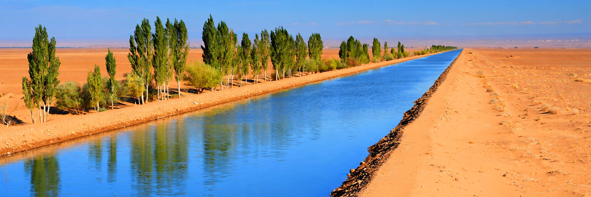

[Image placeholder: The Karakum Canal crossing the desert in Turkmenistan]The **Karakum Canal** (also Karakum River, Qaraqum Canal) in Turkmenistan is one of the largest irrigation and water-supply canals in the world. It diverts water from the Amu Darya river westward across the Karakum Desert for about 1,375 km, toward Ashgabat and the Caspian foothills, irrigating millions of hectares (mainly cotton) and supplying the capital's drinking water.
Begun in 1954 and built in stages largely by manual and convict-influenced labour drives, the unlined canal loses large fractions of its flow to seepage and evaporation — losses that create unintended lakes and wetlands while starving the Amu Darya delta and the Aral Sea. It takes a significant share of the Amu Darya's annual flow, making it a central object of Central Asian water politics and of criticism of Soviet cotton policy.
The canal greened a ribbon of desert, enabled Turkmen cotton exports, and raised water tables around Ashgabat; it also salinised soils and — with the rest of the basin's diversions — helped turn the Aral catastrophe. Modern Turkmen governments plan extensions and a giant artificial lake (Altyn Asyr) fed partly by drainage water.